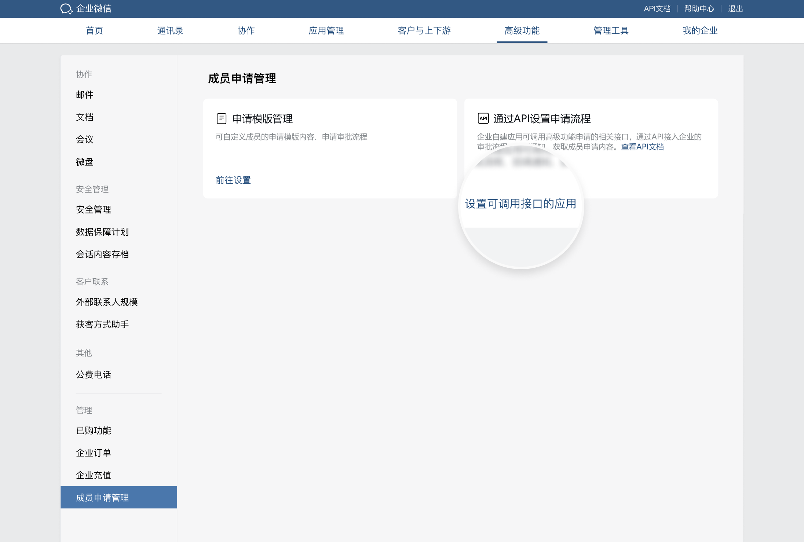

目录
企业可通过接口配置成员申请流程，将成员申请与企业自建的审批流程对接，满足更灵活的申请流程管理需求。
企业和开发者通过高级功能的成员申请管理相关接口，可以将成员的申请内容传入企业自建应用的审批系统中，相关审批人可在企业自建应用的审批系统中，进行审批和流转操作，并可将相应的审批状态，更新至企业微信高级功能的申请列表页面，便于管理员及时进行处理，管理更方便。
当前提供的接口如下：
应用在调用本接口前，需要先获得接口使用权限。
自建应用：管理员登录企业微信管理端，进入「高级功能」-「管理」-「成员申请管理」，配置「可调用接口的应用」。

仅当企业自建应用通过“设置审批单审批信息”接口成功返回信息时，API审批流程才算做设置成功。若企业自建应用在收到“成员申请的提交回调”后的24小时内，未通过“设置审批单审批信息”接口成功返回信息，则API流程设置失败，成员申请将恢复为设置接口之前的申请流程。